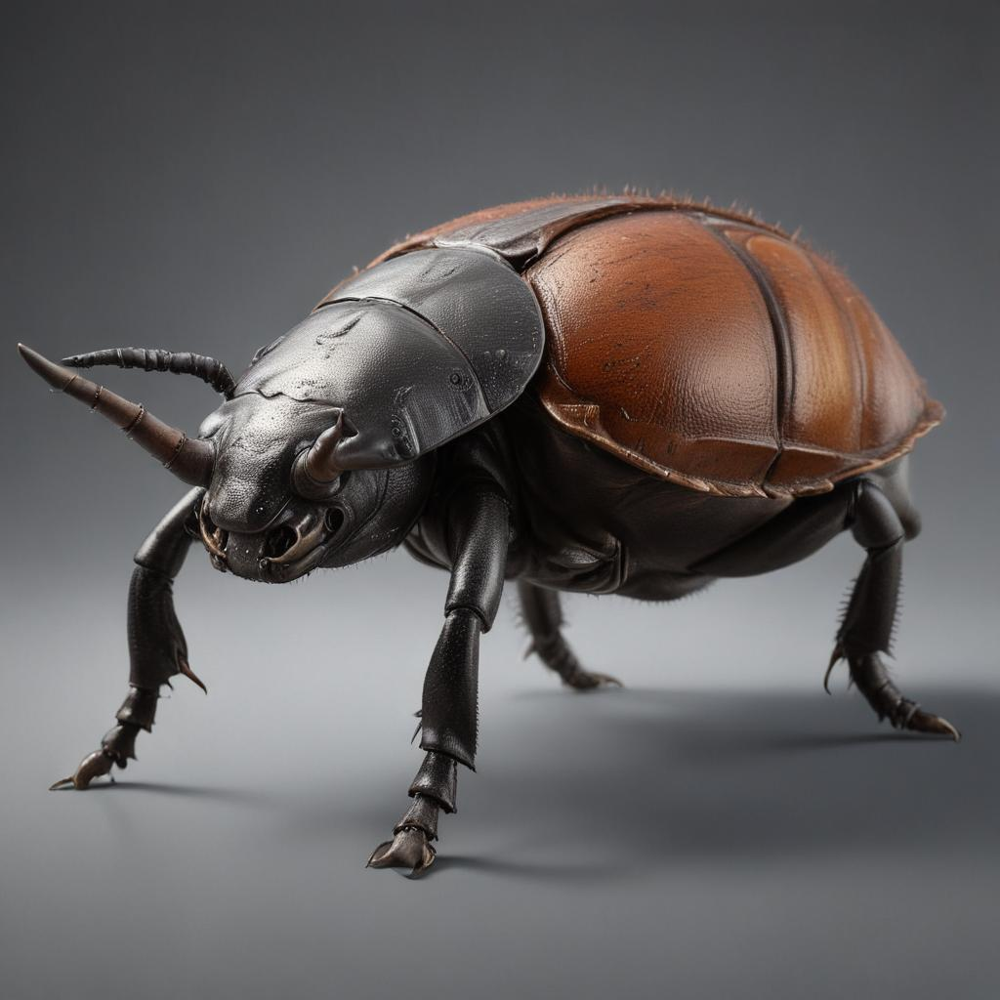

장수풍뎅이 소개

장수풍뎅이는 수컷의 머리에 긴 뿔이 있는 딱정벌레예요. 이 뿔로 다른 수컷과 싸울 수도 있고, 암컷은 뿔이 없어요.
장수풍뎅이의 특징
크기
몸길이는 3~8cm로 우리나라에서 가장 큰 딱정벌레예요.
색깔
몸은 검은색이나 갈색이고 윤기가 나요.
먹이
나무의 수액을 먹어요. 특히 참나무 수액을 좋아해요.
생활
밤에 활동하고, 낮에는 나무 속에서 쉬어요.
장수풍뎅이의 일생
알
암컷이 썩은 나무나 흙 속에 알을 낳아요.
애벌레
썩은 나무를 먹으며 2~3년 동안 자라요.
번데기
흙 속에서 번데기가 되어 몸이 바뀌어요.
성충
멋진 성충이 되어 나무 수액을 먹어요.
재미있는 사실
- 장수풍뎅이는 매우 힘이 세요.
- 수컷은 뿔로 서로 싸워서 세력 다툼을 해요.
- 애벌레는 썩은 나무를 먹고 자라요.
- 성충은 수액을 좋아해요.